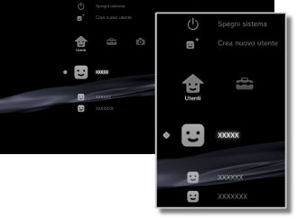

Utenti > Categoria Utenti
Categoria Utenti
Consente di creare utenti o disattivare il sistema PS3™. Se si creano utenti multipli, i dati come i dati salvati per il software in formato PlayStation®3, i messaggi inviati e ricevuti sotto  (Amici) e i segnalibri sotto
(Amici) e i segnalibri sotto  (Browser per Internet) vengono conservati separatamente per ogni utente. Sotto
(Browser per Internet) vengono conservati separatamente per ogni utente. Sotto  (Utenti) sono visualizzate le seguenti icone.
(Utenti) sono visualizzate le seguenti icone.

| Spegni sistema | Consente di spegnere il sistema PS3™. | |
|---|---|---|
 |
Crea nuovo utente | Crea un nuovo utente. |
| (nome utente) | Accede al sistema PS3™. |
Nota
I seguenti tipi di dati archiviati sul disco rigido vengono visualizzati indipendentemente dall'utente che ha effettuato l'accesso. Se i dati vengono eliminati, anche gli altri utenti non potranno utilizzarli. Fare attenzione a non eliminare accidentalmente i dati importanti.
- Dati salvati per il software in formato PlayStation®2 / PlayStation®
- Giochi visualizzati sotto
 (Gioco)
(Gioco) - File video visualizzati sotto
 (Video)
(Video) - File musicali visualizzati sotto
 (Musica)
(Musica) - File di immagine visualizzati sotto
 (Foto)
(Foto)
Avvisi
- Alcuni titoli di software in formato PlayStation®2 o PlayStation® possono essere eseguiti in modo differente sul sistema PS3™ rispetto all'esecuzione sui sistemi PlayStation®2 o PlayStation®, oppure non vengono eseguiti correttamente sul sistema PS3™.
- Inoltre, il software in formato PlayStation®2 non è riproducibile su alcuni sistemi PS3™. Per i dettagli, vedere [Tipi di dischi riproducibili], visitare il sito Web di SCE per la propria zona o rivedere la documentazione inclusa con il sistema PS3™.